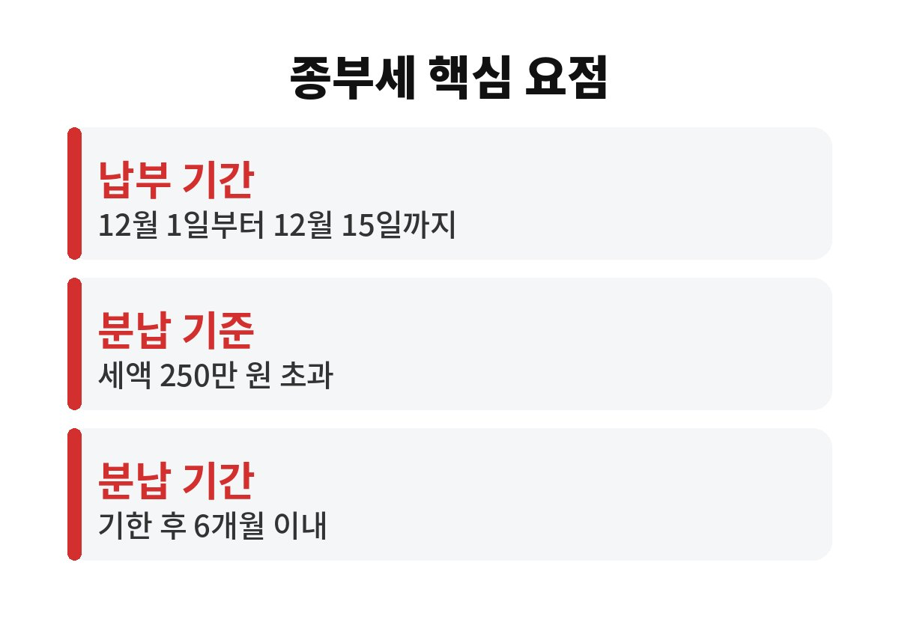
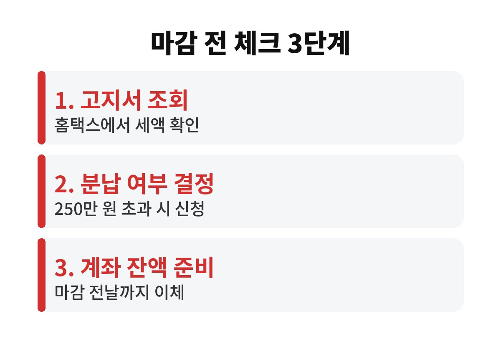

종부세 납부 기간은 매년 12월 1일부터 12월 15일까지이고, 이 기한을 넘기면 가산세가 붙는다. 집이나 토지를 가진 분이라면 고지서를 받고도 납부일을 미뤘다가 불필요한 돈을 내는 일이 없으려면 어떤 점을 확인해야 할까?
종합부동산세는 매년 6월 1일 기준으로 주택과 토지를 가진 사람에게 부과되는 세금이다. 세액은 정부가 계산해서 고지서로 보내 주고, 납세자는 12월 1일부터 15일 사이에 내면 된다. 보통 11월 하순부터 고지서가 도착하거나 홈택스와 모바일 앱에서 조회할 수 있으므로 지금부터 미리 확인해 두는 편이 안전하다.
여기서 중요한 점은 15일이 마지막 날이라는 사실이다. 은행 창구가 닫힌 뒤에는 처리가 다음 날로 넘어갈 수 있기 때문에 마감일 오후에 몰리는 것은 위험하다. 계좌 이체나 카드 납부, 간편 결제 등 여러 방법이 있으니 여유 있게 처리하는 것이 좋다.

그렇다. 납부 기한이 지나면 납부지연 가산세가 붙는다. 이 가산세는 한 번에 크게 붙는 방식이 아니라 늦은 날짜만큼 일 단위로 쌓이는 구조다. 하루 이틀 늦었다고 큰 금액은 아니지만, 세액이 큰 사람일수록 체감하는 부담도 커진다. 그래서 자동이체 계좌 잔액을 미리 맞춰 두는 습관이 필요하다.
또 하나 놓치기 쉬운 부분은 재산세와의 관계다. 같은 집에 대해 7월과 9월에 재산세를 이미 냈더라도 종부세는 별도로 부과된다. 이미 냈으니 끝났다고 생각하고 고지서를 열어 보지 않으면 곤란하다.
가능하다. 납부할 세액이 250만 원을 넘으면 분납을 신청할 수 있다. 분납은 납부 기한이 지난 날부터 6개월 이내에 나머지를 내는 제도이고, 이 기간에는 가산세가 붙지 않는다. 다만 기준은 세액에 따라 달라진다.
분납 요점 박스
| 납부 세액 250만 원 이하 | 분납 불가, 한 번에 납부 |
| 250만 원 초과 500만 원 이하 | 250만 원을 넘는 금액을 분납 가능 |
| 500만 원 초과 | 세액의 50% 이하를 분납 가능 |
분납을 하려면 납부 기한 안에 첫 번째 몫을 먼저 내야 하고, 분납 신청서를 함께 제출해야 한다. 고지서에 안내된 방법을 따르거나 세무서 또는 홈택스에서 신청할 수 있다. 신청을 깜빡하면 일부만 낸 것으로 처리되어 남은 금액에 가산세가 붙을 수 있다는 점은 꼭 기억해야 한다.

종부세는 보유한 주택의 공시가격을 합산한 뒤 기본공제를 빼고 계산한다. 기본공제는 일반적으로 9억 원이고, 1세대 1주택자는 12억 원으로 더 넓게 적용된다. 이 금액을 넘지 않으면 고지서 자체가 오지 않는다. 대상인지 헷갈린다면 홈택스에서 본인 명의 보유 현황을 먼저 조회하는 것이 가장 빠른 방법이다.
부부 공동명의 여부, 1세대 1주택 특례 적용 여부, 고령자나 장기 보유에 따른 세액공제는 개인마다 다르다. 올해 적용 기준은 해마다 조금씩 달라질 수 있으므로 국세청 안내와 본인 고지서의 감면 내역을 직접 대조해 보는 것이 정확하다. 이번 주에 고지서나 홈택스 조회부터 해 두면 12월 15일 마감 전에 분납 여부까지 차분히 결정할 수 있다.
실제로 많은 납세자가 헷갈려 하는 부분은 고지서에 적힌 금액이 곧바로 통장에서 빠져나가는 것이 아니라는 점이다. 직접 납부하거나 자동이체를 미리 설정해 두어야 정상적으로 처리된다. 계좌에 돈이 부족해서 이체가 실패하면 납부한 것으로 인정되지 않으므로, 마감일 하루 전에는 잔액을 확인하는 습관이 도움이 된다.
세금은 모르면 손해를 보고 알면 아낄 수 있는 대표적인 분야다. 분납 제도와 납부 기한만 정확히 알고 있어도 현금 흐름에 여유가 생기고, 불필요한 가산세도 막을 수 있다. 고지서가 오면 금액부터 놀라기보다 기한과 선택지를 먼저 살펴보는 것이 현명하다.
혹시 올해 고지서에 적힌 금액이 예상과 다르다면 어느 항목에서 차이가 났는지 궁금하지 않은가? 댓글로 의견을 남겨 주시고, 이런 생활 세금 소식을 계속 받아 보고 싶다면 블로그 구독을 눌러 두면 좋다.
본 글은 일반적인 정보 제공을 위한 것으로 투자 권유가 아니며, 세액은 개인 상황에 따라 다르므로 세무 전문가나 국세청 안내를 확인하시기 바랍니다.